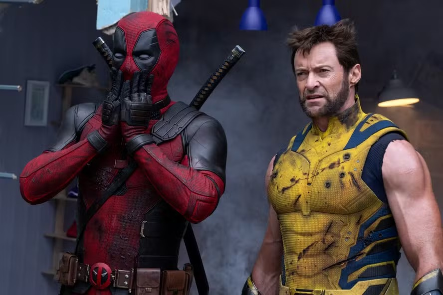
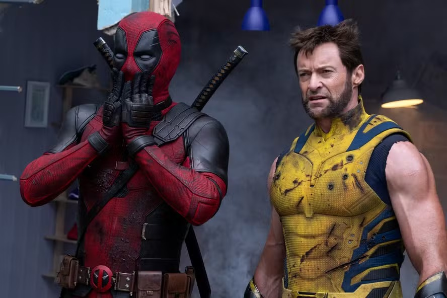

Data de Nascimento: 24, de novembro de 2007
sou aluno do injr e me chamo Pedro H Teodoro, amo jogar bola e cozinhar, vivo com minha familia no canto do forte e atualmente estudo front end e ui design.


 
